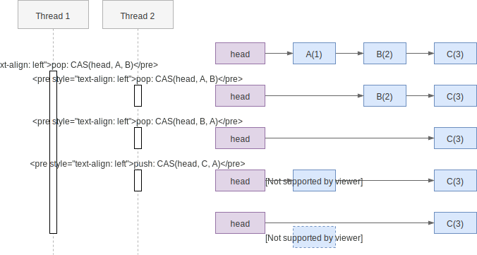

AtomicStampedReference
AtomicStampedReference 本身不难理解，稍微难理解的是它要解决的 ABA 问题。
ABA 问题
ABA 问题的核心是：CAS 操作在 compare 阶段，只会比较目标的部分信息，例如只比较内存地址是否相等而非对象的所有字段相等，于是 CAS 时，无法确定目标是最初看到的那个，还是被其它替换过的。
在非 GC 的语言中（如 C/C++）中实现 lock-free 算法时容易遇到这个问题，因为内存被释放时可能还有变量存放该内存的引用，而新的对象可能重用了该内存地址，造成地址相同内容不同的情形1。
考虑用链表实现一个栈：

上图的问题在于内存地址 A 被重复利用，分配给新的对象了。在线程 1 发出 CAS 指令但还未执行的过程中，线程 2 做了两次 pop，一次 push，最终将 head 的值设置成了A(4)，于是线程 1 的 CAS 判断内存地址还是 A，指令执行成功，却把线程 2 push
的元素给 pop 了。
要注意的是这个行为是不是 "bug" 取决于业务的需求，如果业务上单纯是想 pop，那么逻辑正确，如果业务上线程 1 是想 pop A(1)，显然就是错的。在实现 lock-free 算法时通常这个行为是错的。
另外注意 ABA 问题并不是“原子性”引起的。CAS 的 compare-and-swap 操作依旧是原子的，只是 compare 的结果不符合上层业务的预期。
解决 ABA 问题的想法也很简单，在 compare 阶段使用更全面的信息做判断，能区分两个
A 即可。常见的手段是增加一个额外的字段，记录修改的版本号，也是
AtomicStampedReference 的实现方式。
AtomicStampedReference 成员变量
代码如下：可以看到定义了 Pair 类将原本的 reference 和新增的 stamp 包装起来。后面会看到在 CAS 时会用 Pair 作为整体用于判断。
public class AtomicStampedReference<V> {
private static class Pair<T> {
final T reference;
final int stamp;
private Pair(T reference, int stamp) {
this.reference = reference;
this.stamp = stamp;
}
static <T> Pair<T> of(T reference, int stamp) {
return new Pair<T>(reference, stamp);
}
}
private volatile Pair<V> pair;
// ...
}
另一个类 AtomicMarkableReference 实现几乎相同，只是相比于使用 int 型的stamp，它使用了 boolean 型的 mark。
CompareAndSet
可以看到 CAS 需要同时判断更新 reference 和 stamp 两个元素：
public boolean compareAndSet(V expectedReference,
V newReference,
int expectedStamp,
int newStamp) {
Pair<V> current = pair;
return
expectedReference == current.reference &&
expectedStamp == current.stamp &&
((newReference == current.reference &&
newStamp == current.stamp) ||
casPair(current, Pair.of(newReference, newStamp)));
}
只有当 expectedReference == current.reference && expectedStamp == current.stamp 成立时，我们才认为旧值相同，需要执行 CAS。在执行 CAS 前会先判断新值是否相同，如果相同已经符合预期，没必要执行 CAS。
在执行 CAS 时，受限于 CAS 操作的粒度，并无法同时判断两个变量，依旧只能判断指针是否相同。但此时判断的是 pair 的指针，而 CAS 前通过其它手段确认 pair 的旧值与用户的预期（入参）相同。
当然，这个方法是“君子协议”，如果大家每次 CAS 都将版本号加一，自然没问题，但如果有线程刻意去回退版本号，则该方法也无法处理。
亮点：包装类实现原子性
我们知道多个变量的原子操作组合后就不再是原子的(TOCTOU 问题）。但是用包装类将多个两个变量组装，提供组装类的原子操作（相当于一个变量），则可以实现整体的原子性。
例如下面的代码，业务上希望 lower <= upper，虽然 lower 与 upper 的获取与赋值都是原子的，但整体的约束可能被打破。
public class NumberRangeService {
private AtomicInteger lower;
private AtomicInteger upper;
public int getLower() { return lower.get(); }
public int getUpper() { return upper.get(); }
public void setLower(int lower) { this.lower.set(lower); }
public void setUpper(int upper) { this.upper.set(upper); }
}
可以使用包装类，将约束包装起来，用以实现线程安全，例如：
public class NumberRange {
private int lower;
private int upper;
public NumberRange(int lower, int upper) {
if (lower > upper) { throw new IllegalArgumentException("lower should be <= upper"); }
this.lower = lower;
this.upper = upper;
}
public int getLower() { return this.lower; }
public int getUpper() { return this.upper; }
}
public class NumberRangeService {
private AtomicReference<NumberRange> range = new AtomicReference<>(new NumberRange(0, 0));
public NumberRange getRange() {
NumberRange range = this.range.get();
return new NumberRange(range.lower, range.upper);
}
public void setRange(NumberRange range) {
this.range.set(range);
}
}
在 Java 中不会发生内存地址重用的问题，因为如果存在对象的引用，则对象的内存不会被释放，也不可能被重复利用。